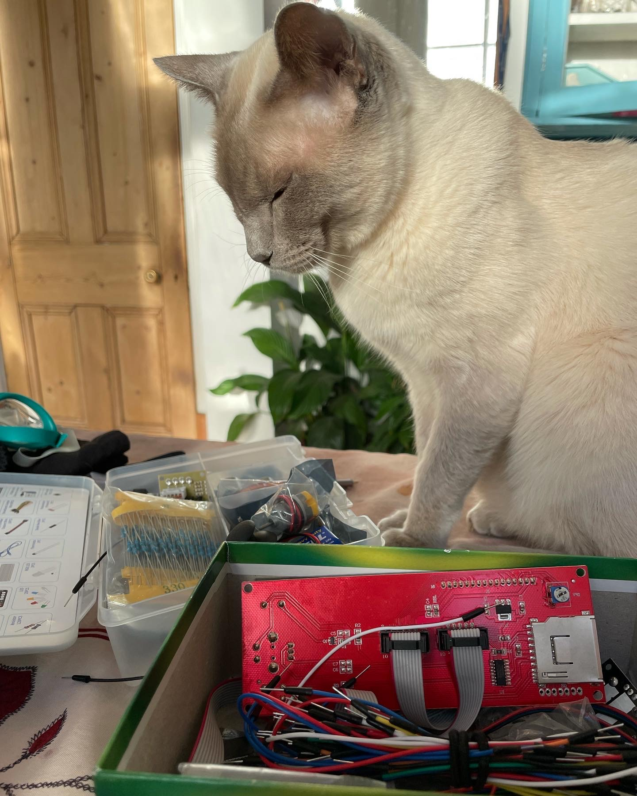
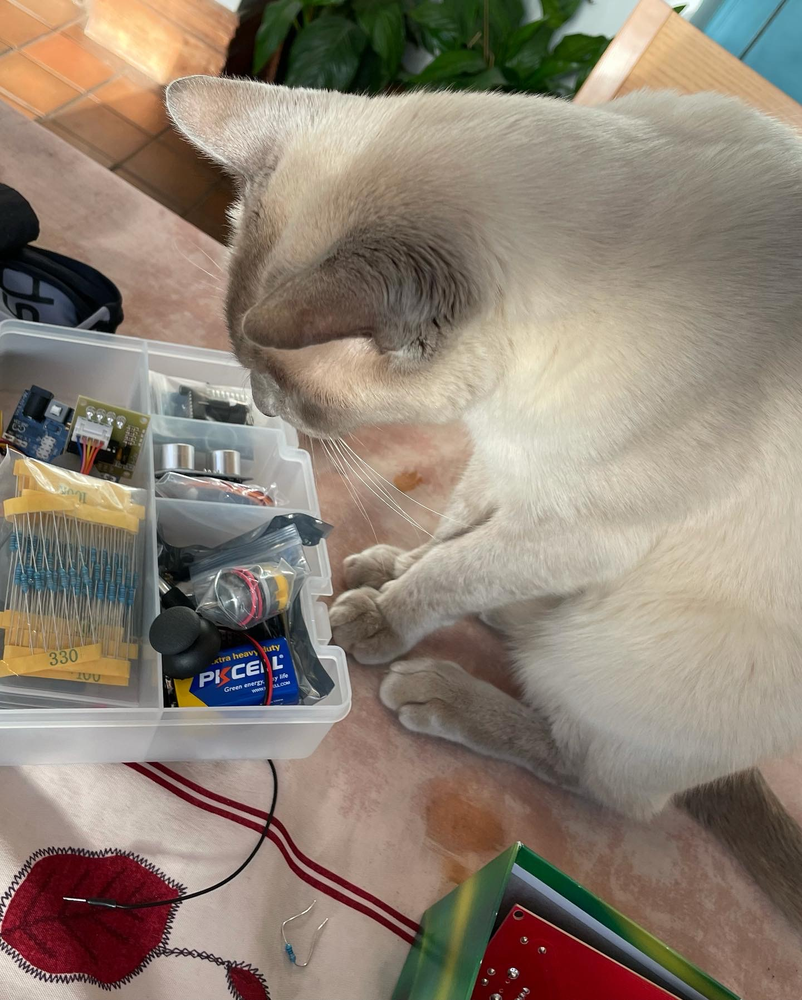
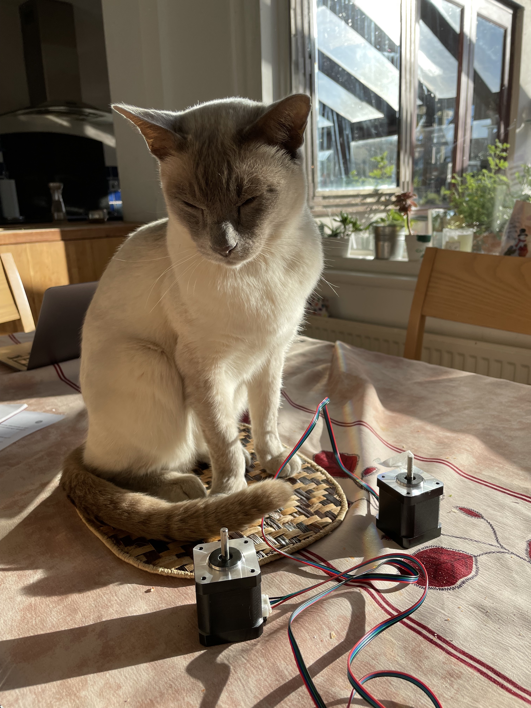
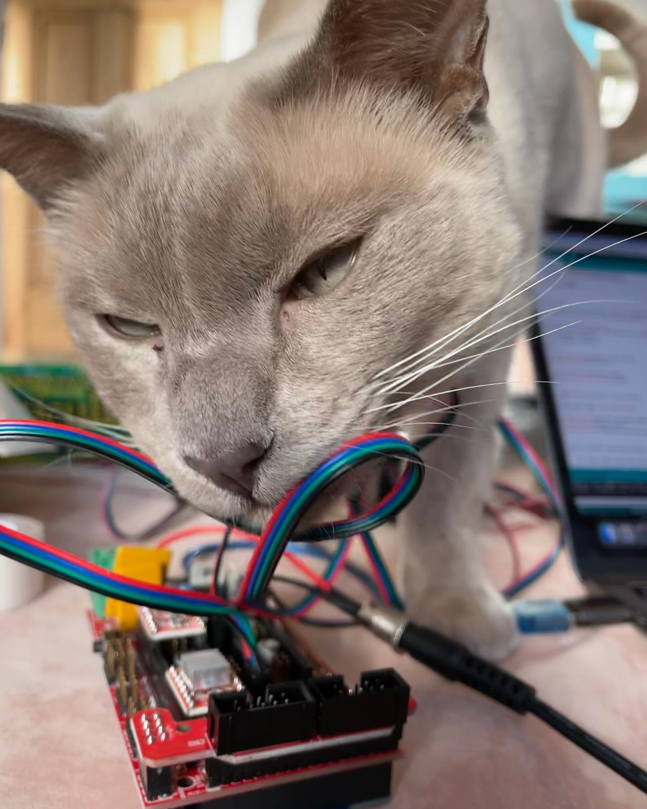
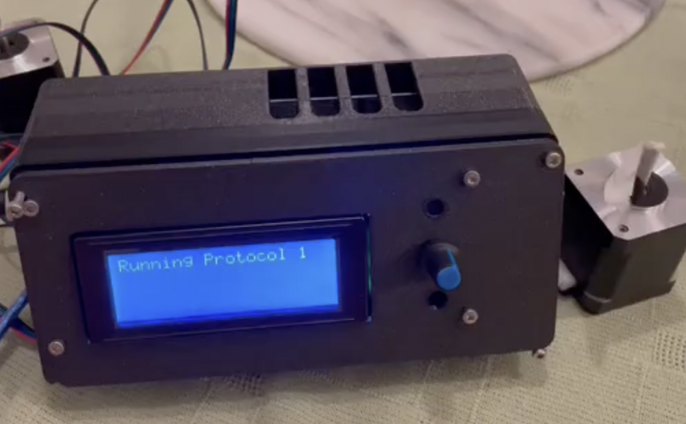

| Component | Price | Shop |
|---|---|---|
| UNO R3 | £10 | Banggood |
| CNC Shield | £4 | Banggood |
| A4988 Stepper Motor Drivers x2 | £2 | Banggood |
| Nema17 Stepper Motors x2 | £15 | Banggood |
| 2004 LCD Smart Display Controller | £14 | Amazon |
DaiDipper V2 - Raspberry Pi & Python
DaiDipper V1 - Arduino
Motivation
Cancer incidence and mortality rates in Africa are increasing, in collaboration with Africa Cancer Trust (Registered Charity 1189665) we aimed to build a low-budget immunostaining machine to aid in cancer diagnostics; the
Automated staining machines have been around for a while however they have a hefty price tag. We hope by making a cheap accessible ease of use automated staining machine we could aid in cancer diagnostics in poorly funded labs.




The Properties of the DaiDipper:
Cheap
We aimed to have a total cost <£100
Open-access
All code and instructions to build on yourself will be published
Accessible
All components should be easily accessible
Ease of use
No expertise knowledge required



Components
The first version of the DaiDipper was built using Arduino. It consists of;
For this beta type the total cost is only